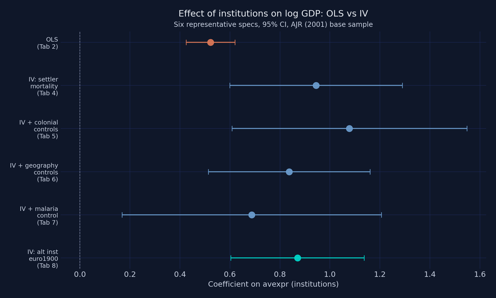
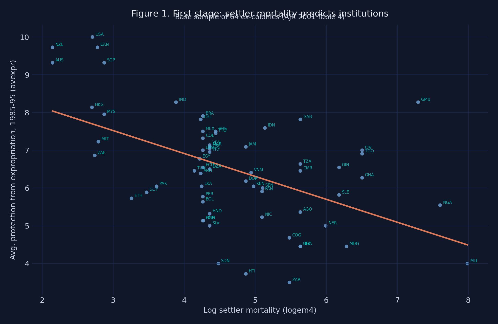
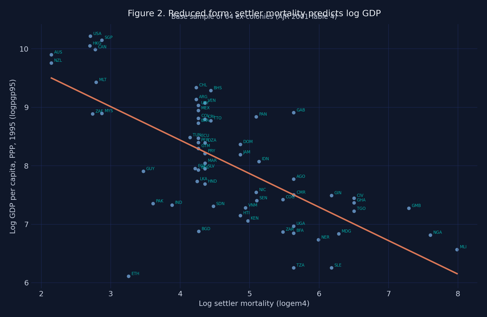

An IV tutorial: instrumenting modern institutions with settler mortality
Nagoya University (GSID)
July 8, 2026
Act I
Stronger property-rights institutions track far higher income across countries. The gradient is real and huge.
But maybe rich countries simply afford better courts — or geography drives both. The slope is correlation; it cannot prove cause.

Coefficient on institutions (\(\hat\beta\)) across six specifications, 95% CIs. Orange = naive OLS; steel = IV with settler mortality; teal = an alternative instrument.
Act II
A regressor is endogenous when it correlates with the error term; then OLS is biased even with infinite data.
\[Y_i = \alpha + \beta X_i + U_i, \qquad \mathrm{Cov}(X_i, U_i) \neq 0\]
The outcome \(Y_i\) (log GDP) depends on the endogenous regressor \(X_i\) (institutions) plus an error \(U_i\) that gathers every unobserved driver of income.
The target is \(\beta\), the true causal coefficient. The non-zero \(\mathrm{Cov}(X_i, U_i)\) is exactly why OLS misses it.
logpgp95), spanning roughly $450 to $27,400avexpr), 0–10logem4), nearly six log points of spreadThe baseco==1 subset of the wider ~163-country world: 64 ex-colonies with valid mortality data.

First-stage scatter of institutions (avexpr) on log settler mortality (logem4), 64 ex-colonies. Slope \(-0.607\), \(F = 16.85\), \(R^2 = 0.27\).

Reduced-form scatter of log GDP (logpgp95) on log settler mortality (logem4). The slope (\(\approx -0.573\)) is the total effect of the instrument on the outcome.
\[\hat\beta_{2SLS} = \frac{\widehat{\mathrm{Cov}}(Y, Z)}{\widehat{\mathrm{Cov}}(X, Z)} = \frac{\hat\beta_{RF}}{\hat\beta_{FS}} = \frac{-0.573}{-0.607} = 0.944\]
The numerator is the total effect of the instrument on the outcome; the denominator rescales by how much the instrument moves institutions.
The whole IV machinery, in one ratio: \(-0.573 / -0.607 = 0.944\).
import pyfixest as pf
from linearmodels.iv import IV2SLS
# structural 2SLS via pyfixest's "exog | endog ~ instrument" syntax
m_iv = pf.feols("logpgp95 ~ 1 | avexpr ~ logem4", data=base, vcov="HC1")
# weak-IV F, Wu-Hausman, Hansen J — the tests pyfixest does not report
res = IV2SLS(base["logpgp95"], X_exog, base[["avexpr"]], base[["logem4"]]).fit(cov_type="robust")0.522
OLS estimate of \(\hat\beta\) on institutions, base sample (SE 0.050) — the benchmark IV will overturn
Objection. Maybe the tropical disease environment that killed settlers still depresses productivity today — a direct arrow from mortality to GDP that breaks the exclusion restriction.
Response. Adding modern health controls pulls \(\hat\beta\) down only to 0.55–0.69 — still above OLS — and the overidentification tests (Hansen J, \(p\) = 0.18–0.79) do not reject joint exogeneity. The threat is real but bounded; it does not erase the effect.
Act III
0.944
2SLS \(\hat\beta\) on institutions (SE 0.176, 95% CI [0.60, 1.29]); Wu-Hausman \(F = 24.22\), \(p < 0.0001\)
| Estimator | \(\hat\beta\) | SE | 95% CI |
|---|---|---|---|
| OLS (base sample) | 0.522 | 0.050 | — |
| 2SLS (settler mortality) | 0.944 | 0.176 | [0.60, 1.29] |
IV > OLS by 81% implies attenuation from measurement error outweighed reverse causality and omitted variables.